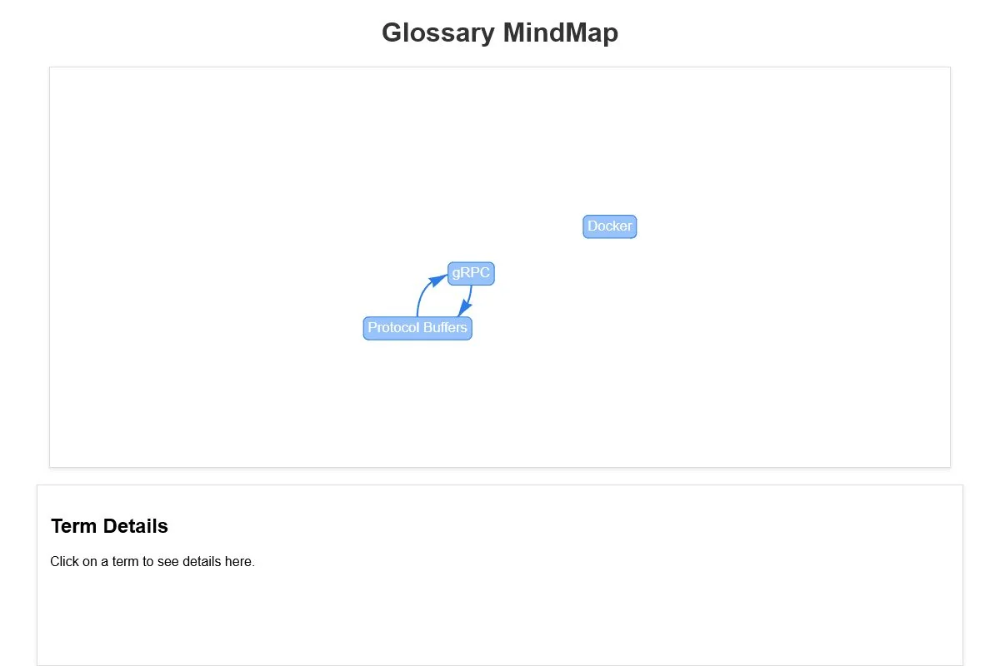

Glossary MindMap
Сервис технических терминов с визуализацией связей в формате интеллект-карты.
- Задача
- Представить связанные технические термины в наглядном web-интерфейсе.
- Реализация
- gRPC-сервис и Protocol Buffers связаны с REST-шлюзом на Flask, frontend использует vis-network, окружение запускается через Docker Compose.
- Python
- gRPC
- Flask
- JavaScript
- Docker